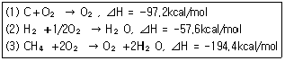
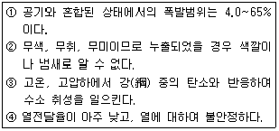
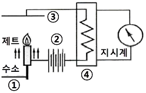
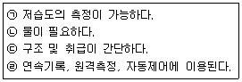

가스산업기사 (2011-10-02 기출문제)
1과목: 연소공학
1. 다음 중 실제 공기량 (A)를 나타낸 식은? (단, m은 공기비, Ao는 이론 공기량이다.)
- A = m＋Ao
- A = m⋅Ao
- A = Ao - m
- A = m/Ao
(정답률: 80%)

2. 주된 소화효과가 질식효과에 의한 소화기가 아닌 것은?
- 분말 소화기
- 포말 소화기
- 산, 알칼리 소화기
- CO2 소화기
(정답률: 86%)
3. 표준상태에서 질소가스의 밀도는 몇 g/L인가?
- 0.97
- 1.00
- 1.07
- 1.25
(정답률: 75%)
4. 다음 중 연소의 3요소에 해당되지 않는 것은?
- 산소
- 정전기 불꽃
- 질소
- 수소
(정답률: 88%)
5. 부탄가스 1m3를 완전연소 시키는데 필요한 이론 공기량은 약 몇 m3인가?
- 20
- 31
- 40
- 51
(정답률: 82%)
6. 메탄을 공기비 1.1로 완전 연소시키고자 할 때 메탄 1Nm3 당 공급해야할 공기량은 약 몇 Nm3인가?
- 2.2
- 6.3
- 8.4
- 10.5
(정답률: 61%)
7. 다음 반응식을 이용하여 메탄(CH4)의 생성열을 구하면?

- ⊿H = -20kcal/mol
- ⊿H = -18kcal/mol
- ⊿H = 18kcal/mol
- ⊿H = 20kcal/mol
(정답률: 87%)
8. 가연물에 대한 설명으로 옳은 것은?
- 0족 원소들은 모두 가연물이다.
- 가연물은 산화반응 시 흡열반응을 일으킨다.
- 질소와 산소가 반응하여 질소산화물을 만들므로 질소는 가연물이다.
- 가연물은 산화 반응 시 발열반응이 일어나므로 열을 축적하는 물질이다.
(정답률: 75%)
9. 다음 중 착화온도가 가장 높은 것은?
- 메탄
- 가솔린
- 프로판
- 아세틸렌
(정답률: 75%)
10. 기체 연료 중 천연가스에 대한 설명으로 옳은 것은?
- 주성분은 메탄가스로 탄화수소의 혼합가스이다.
- 상온, 상압에서 LPG보다 액화하기 쉽다.
- 발열량이 수성가스에 비하여 작다.
- 누출 시 폭발위험성이 적다.
(정답률: 83%)
11. 다음 중 층류 연소 속도의 측정법으로 널리 이용 되는 방법이 아닌 것은?
- 슬롯 버너법
- 비누거품법
- 평면화염 버너법
- 단일화염핵법
(정답률: 60%)
12. 다음 폭발 원인에 따른 종류 중 물리적 폭발은?
- 산화폭발
- 분해폭발
- 촉매폭발
- 압력폭발
(정답률: 91%)
13. 다음 이상기체에 대한 설명 중 틀린 것은?
- 이상기체는 분자 상호간의 인력을 무시한다.
- 이상기체에 가까운 실제기체로는 H2, He 등이 있다.
- 이상기체는 분자 자신이 차지하는 부피를 무시한 다.
- 저온, 고압일수록 이상기체에 가까워진다.
(정답률: 84%)
14. 메탄 50v%, 에탄 25v%, 프로판 25v% 가 섞여 있는 혼합 기체의 공기 중에서 연소하한계(v%)는 얼마인가? (단, 메탄, 에탄, 프로판의 연소하한계는 각각 5v%, 3v%, 2.1v% 이다.)
- 2.3
- 3.3
- 4.3
- 5.3
(정답률: 84%)
15. 완전연소의 구비조건 중 틀린 것은?
- 연소에 충분한 시간을 부여한다.
- 연료를 인화점 이하로 냉각하여 공급한다.
- 적정량의 공기를 공급하여 연료와 잘 혼합한다.
- 연소실 내의 온도를 연소조건에 맞게 유지한다.
(정답률: 91%)
16. 연소에서 유효수소를 옳게 나타낸 것은?
- H - C/8
- O - C/8
- O - H/8
- H - O/8
(정답률: 71%)
17. 가스의 폭발범위에 대한 설명으로 옳은 것은?
- 가스의 온도가 높아지면 폭발범위는 좁아진다.
- 폭발상한과 폭발하한의 차이가 작을수록 위험도는 커진다.
- 압력이 1atm 보다 낮아질 때 폭발범위는 큰 변화가 생긴다.
- 고온, 고압 상태의 경우에 가스압이 높아지면 폭발 범위는 넓어진다.
(정답률: 84%)
18. 분진폭발의 위험성을 방지하기 위한 방법으로 잘못된 것은?
- 분진의 산란이나 퇴적을 방지하기 위하여 정기적으로 분진을 제거한다.
- 분진의 취급 방법을 건식법으로 한다.
- 분진이 일어나는 근처에 습식의 스크러버 장치를 설치한다.
- 환기장치는 공정별로 단독집진기를 사용한다.
(정답률: 76%)
19. LPG 에 대한 설명 중 틀린 것은?
- 포화탄화수소화합물이다.
- 휘발유 등 유기용매에 용해된다.
- 상온에서는 기체이나 가압하면 액화된다.
- 액체 비중은 물보다 무겁고, 기체상태에서는 공기 보다 가볍다.
(정답률: 89%)
20. 파라핀계 탄화수소에서 탄소의 수가 증가함에 따른 변화에 대한 설명으로 틀린 것은?
- 발열량(kcal/m3)은 커진다.
- 발화온도는 낮아진다.
- 연소속도는 느려진다.
- 폭발하한계는 높아진다.
(정답률: 57%)
2과목: 가스설비
21. 원심펌프의 양수원리에 대한 설명으로 옳은 것은?
- 회전차의 원심력을 이용한다.
- 익형 날개차의 양력과 원심력을 이용한다.
- 익형 날개차의 양력을 이용한다.
- 회전차의 케이싱과 회전차사이의 마찰력을 이용한 다.
(정답률: 71%)
22. 고압가스 제조설비의 가연성가스 저장탱크에 설치하는 안전밸브의 가스방출관의 설치 위치는?
- 지면으로부터 3m 이상 또는 저장탱크의 정상부로 부터 3m 의 높이 중 높은 위치
- 지면으로부터 3m 이상 또는 저장탱크의 정상부로 부터 2m 높은 위치
- 지면으로부터 5m 이상 또는 저장탱크의 정상부로 부터 2m 의 높이 중 높은 위치
- 지상에서 5m 이하의 높이에 설치하고 저장탱크의 주위에 마른 모래를 채울 것
(정답률: 73%)
23. 증기압축 냉동사이클에서 냉매가 순환되는 경로를 옳게 나타낸 것은?
- 압축기 → 증발기 → 팽창밸브 → 응축기
- 증발기 → 압축기 → 응축기 → 팽창밸브
- 증발기 → 응축기 → 팽창밸브 → 압축기
- 압축기 → 응축기 → 증발기 → 팽창밸브
(정답률: 83%)
24. 전기방식방법 중 희생양극법의 특징에 대한 설명으로 틀린 것은?
- 시공이 간단하다.
- 단거리 배관에 경제적이다.
- 과방식의 우려가 없다.
- 방식효과 범위가 넓다.
(정답률: 68%)
25. 강의 열처리 방법 중 오스테나이트 조직을 마텐자이트 조직으로 바꿀 목적으로 0℃ 이하로 처리하는 방법은?
- 담금질
- 불림
- 심냉 처리
- 염욕 처리
(정답률: 89%)
26. 다음 중 특정고압가스이면서 그 성분이 독성가스인 것으로 나열된 것은?
- 액화암모니아, 액화염소
- 액화염소, 액화질소
- 액화암모니아, 액화석유가스
- 산소, 수소
(정답률: 86%)
27. 외경(D)이 216.3㎜, 구경 두께 5.8㎜인 200A 의 배관용 탄소강관이 내압 9.9kgf/cm2을 받았을 경우에 관에 생기는 원주방향 응력은 약 몇 kgf/cm2인가?
- 88
- 175
- 263
- 351
(정답률: 64%)
28. 암모니아 압축기 실린더에 일반적으로 워터재킷을 사용하는 이유가 아닌 것은?
- 압축 효율의 향상을 도모한다.
- 윤활유의 탄화를 방지한다.
- 밸브 스프링의 수명을 연장시킨다.
- 압축 소요 일량을 크게 한다.
(정답률: 76%)
29. 실린더의 지름이 10cm, 행정거리가 20cm, 회전수가 1000rpm인 왕복 압축기의 토출량은 약 몇 m3/h인가? (단, 압축기의 체적효율은 70% 이다.)
- 46
- 56
- 66
- 76
(정답률: 62%)
30. 용기 동판의 최대 두께와 최소 두께와의 차이는 평균두께의 몇 % 이하로 하는가?(2013년 ⑤월20일 개정된 규정 적용됨)
- 10
- 15
- 20
- 30
(정답률: 74%)
31. 토양 중의 배관의 방식전위는 포화황산동 기준전극으로 기준하여 얼마 이하이어야 하는가? (단, 황산염환원박테리아가 번식하지 않는 토양이다.)
- -0.85V
- -0.95V
- -1.⑤V
- -1.15V
(정답률: 77%)
32. 다음 중 신축조인트 방법이 아닌 것은?
- 슬립-온(Slip-On)형
- 루프(Loop)형
- 슬라이드(Slide)형
- 벨로우즈(Bellows)형
(정답률: 78%)
33. 내용적이 500L, 압력이 12MPa 이고 용기 본수는 120개 일 때 압축가스의 저장능력은 몇 m3인가?
- 3260
- 5230
- 7260
- 7580
(정답률: 63%)
34. 일산화탄소에 의한 카르보닐을 생성시키지 않는 금속은?
- 코발트(Co)
- 철(Fe)
- 크롬(Cr)
- 니켈(Ni)
(정답률: 62%)
35. 배관을 통한 도시 가스의 공급에 있어서 압력을 변경하여야 할 지점마다 설치되는 설비는?
- 압송기(壓送器)
- 정압기(Governor)
- 가스전(栓)
- 홀더(Holder)
(정답률: 86%)
36. 다음 보기는 수소의 성질에 대한 설명이다. 옳은 것만으로 나열된 것은?

- ①, ②
- ①, ③
- ②, ③
- ②, ④
(정답률: 90%)
37. 터보식 펌프 중 사류펌프의 비교회전도(m3/min⋅ m⋅rpm) 범위를 가장 옳게 나타낸 것은?
- 50~100
- 100~600
- 500~1200
- 120~2000
(정답률: 77%)
38. 캐비테이션 현상의 발생 방지책에 대한 설명으로 가장 거리가 먼 것은?
- 펌프의 회전수를 높인다.
- 흡입 관경을 크게 한다.
- 펌프의 위치를 낮춘다.
- 양흡입 펌프를 사용한다.
(정답률: 82%)
39. 지름 20mm, 표점거리 150mm의 연강재 시험편을 인장시험한 결과 표점거리 180mm가 되었다. 이때 연신율은 몇 %인가?
- 10
- 15
- 20
- 25
(정답률: 63%)
40. 캐스케이드 액화사이클에 사용되는 냉매가 아닌 것은?
- 암모니아(NH3)
- 에틸렌(C2H4)
- 메탄(CH4)
- 액화질소(L-N2)
(정답률: 56%)
3과목: 가스안전관리
41. 가연성가스 저온저장탱크가 압력에 의해 파괴되는 것을 방지하기 위한 부압파괴방지설비가 아닌 것은?
- 진공안전밸브
- 다른 저장탱크 또는 시설로부터의 가스도입배관
- 압력과 연동하는 긴급차단장치를 설치한 냉동제어 설비
- 압력과 연동하는 역류방지장치를 설치한 송기설비
(정답률: 47%)
42. 액화석유가스의 저장설비와 화기취급 장소와의 사이에는 몇 m 이상의 우회거리를 유지하여야 하는가?
- 3m
- 5m
- 8m
- 10m
(정답률: 74%)
43. 압축가스 10m3가 충전된 용기를 차량에 적재하여 운반할 때 비치하여야 할 소화설비의 기준으로 옳은 것은?
- 분말소화제 B-2 이상
- 분말소화제 B-3 이상
- 분말소화제 BC용
- 분말소화제 ABC용
(정답률: 54%)
44. 프로판가스의 폭굉 범위(vol%) 값에 가장 가까운 것은?
- 2.2 ~ 9.5
- 2.7 ~ 36
- 3.2 ~ 37
- 4.0 ~ 75
(정답률: 44%)
45. 도시가스배관을 지하에 설치 시 되메움 재료는 3단 계로 구분하여 포설한다. 이때 “침상재료”라 함은?
- 배관침하를 방지하기 위해 배관하부에 포설하는 재료
- 배관에 작용하는 하중을 분산시켜주고 도로의 침하를 방지하기 위해 포설하는 재료
- 배관기초에서부터 노면까지 포설하는 배관주의 모든 재료
- 배관에 작용하는 하중을 수직방향 및 횡방향에서 지지하고 하중을 기초 아래로 분산하기 위한 재료
(정답률: 71%)
46. 다음 중 LPG 용기 밸브 안전장치로서 가장 널리 사용되고 있는 형식은?
- 파열판식
- 스프링식
- 중추식
- 완전수동식
(정답률: 79%)
47. 고압가스 충전용기의 운반기준 중 틀린 것은?
- 운반 중의 충전용기는 항상 40℃ 이하로 유지하여야 한다.
- 독성가스 탱크의 내용적은 1만 2천L를 초과하지 않아야 한다.
- 염소와 아세틸렌은 동일 차량에 적재하여 운반할 수 있다.
- 가연성가스와 산소를 동일 차량에 적재하여 운반할 때는 그 충전용기의 밸브가 서로 마주보지 아니하도록 적재한다.
(정답률: 88%)
48. 염소가스 취급에 대한 설명 중 옳지 않은 것은?
- 독성이 강하여 흡입하면 호흡기가 상한다.
- 재해제로는 소석회 등이 사용된다.
- 염소압축기의 윤활유는 진한 황산이 사용된다.
- 산소와는 염소폭명기를 일으키므로 동일 차량에 적재를 금한다.
(정답률: 79%)
49. 고압가스용기(공업용)의 외면에 도색하는 가스 종류별 색상이 바르게 짝지어진 것은?
- 액화석유가스 – 회색
- 수소 – 백색
- 액화염소 – 황색
- 아세틸렌 – 회색
(정답률: 77%)
50. 수소의 확산속도는 동일조건에서 산소의 확산속도에 비하여 몇 배 빠른가?
- 2배
- 4배
- 8배
- 16배
(정답률: 57%)
51. 이동식부탄연소기와 관련된 사고가 액화석유가스 사고의 약 10% 수준으로 발생하고 있다. 이를 예방하기 위한 방법으로 잘못된 것은?
- 연소기에 접합용기를 정확히 장착한 후 사용한다.
- 과대한 조리가구를 사용하지 않는다.
- 잔가스 사용을 위해 용기를 가열하지 않는다.
- 사용한 접합용기는 파손되지 않도록 조치한 후 버린다.
(정답률: 89%)
52. 차량에 고정된 탱크 운행 시 반드시 휴대하지 않아도 되는 서류는?
- 고압가스 이동계획서
- 탱크 내압시험 성적서
- 차량등록증
- 탱크용량 환산표
(정답률: 79%)
53. 각 저장탱크의 저장능력이 20톤인 암모니아 저장 탱크 2기를 지하에 인접하여 매설할 경우 상호간에 몇 m 이상의 이격거리를 유지하여야 하는가?
- 0.3m
- 0.6m
- 1m
- 1.2m
(정답률: 76%)
54. 독성인 액화가스 저장탱크 주위에는 합산 저장 능력이 몇 톤 이상일 경우 방류둑을 설치하여야 하는가?
- 2
- 3
- 5
- 10
(정답률: 85%)
55. 내용적이 10,000L인 액화산소 저장탱크의 저장능력은? (단, 액화산소의 비중은 1.04이다.)
- 6225kg
- 9360kg
- 9615kg
- 10400kg
(정답률: 72%)
56. 액화석유가스 저장탱크에 가스를 충전할 때 액체 부피가 내용적의 90%를 넘지 않도록 규제하는 가장 큰 이유는?
- 액체팽창으로 인한 압력상승을 방지하기 위하여
- 온도상승으로 인한 탱크의 취약방지를 위하여
- 등적팽창으로 인한 온도상승 방지를 위하여
- 탱크내부의 부압(negative pressure)발생 방지를 위하여
(정답률: 83%)
57. 용기 내부에서 가연성가스의 폭발이 발생할 경우 그 용기가 폭발압력에 견디고 접합면, 개구부 등을 통하여 외부의 가연성가스에 인화되지 아니하도록 한 구조는?
- 내압방폭구조
- 유입방폭구조
- 압력방폭구조
- 특수방폭구조
(정답률: 86%)
58. 다음 독성가스 중 허용농도가 가장 낮은 가스는?
- 암모니아
- 염소
- 산화에틸렌
- 포스겐
(정답률: 59%)
59. 다음의 액화가스를 이음매 없는 용기에 충전할 경우 그 용기에 대하여 음향검사를 실시하고 음향이 불량한 용기는 내부조명검사를 하지 않아도 되는 것은?
- 액화프로판
- 액화암모니아
- 액화탄산가스
- 액화염소
(정답률: 61%)
60. 메탄 70%, 에탄 20%, 프로판 10%로 구성된 혼합가스의 공기 중 폭발하한계(v%) 값은? (단, 각 성분의 폭발하한계는 메탄 5.0, 에탄 3.0, 프로판 2.1 이다.)
- 3.5
- 3.9
- 4.5
- 4.9
(정답률: 76%)
4과목: 가스계측
61. 가스미터 선정 시 고려할 사항으로 틀린 것은?
- 가스의 최대사용유량에 적합한 계량능력인 것은 선택한다.
- 가스의 기밀성이 좋고 내구성이 큰 것을 선택한다.
- 사용 시 기차가 커서 정확하게 계량할 수 있는 것을 선택한다.
- 내열성, 내압성이 좋고 유지관리가 용이한 것을 선택한다.
(정답률: 88%)
62. 혼합물의 구성 성분을 분리하는 분리관의 분리능에 가장 큰 영향을 미치는 것은?
- 시료의 용량
- 고정상 담체의 입자크기
- 담체에 부착되는 액체의 양
- 분리관의 모양과 배치
(정답률: 53%)
63. 다음 중 보상도선과 기준접점을 이용하는 온도계 는?
- 바이메탈 온도계
- 압력 온도계
- 베크만 온도계
- 열전대 온도계
(정답률: 73%)
64. 회전자형 및 피스톤형 가스미터를 제외한 건식 가스미터의 경우 검정증인의 올바른 표시위치는?
- 외부함
- 전면판
- 눈금지시부 및 상판의 접합부
- 본관의 보기 쉬운 부분 및 부관의 출입구
(정답률: 72%)
65. 바이메탈온도계의 특징에 대한 설명으로 틀린 것은?
- 히스테리시스 오차가 발생한다.
- 온도변화에 대한 응답이 빠르다.
- 온도조절 스위치로 많이 사용한다.
- 작용하는 힘이 작다.
(정답률: 67%)
66. 배관의 유속을 피토관으로 측정할 때 마노미터의 수주 높이가 30cm이었다. 이때 유속은 약 몇 m/s인가?
- 0.76
- 2.4
- 7.6
- 24.2
(정답률: 53%)
67. 연소분석법 중 2종 이상의 동족 탄화수소와 수소가 혼합된 시료를 측정할 수 있는 것은?
- 폭발법, 완만 연소법
- 분별 연소법, 완만 연소법
- 파라듐관 연소법, 산화구리법
- 산화구리법, 완만 연소법
(정답률: 76%)
68. 차압식 유량계로 유량을 측정하였더니 교축기구 전후의 차압이 20.25Pa 일 때 유량이 25m3/h 이었다. 차압이 10.50Pa일 때의 유량은 약 몇 m3/h인가?
- 13
- 18
- 23
- 28
(정답률: 61%)
69. 액면 조절을 위한 자동제어의 구성으로 가장 적당한 것은?
- 조작기 → 전송기 → 액면계 → 조절기 → 밸브
- 조절기 → 전송기 → 조작기 → 밸브 → 조절기
- 밸브 → 액면계 → 전송기 → 조작기 → 조절기
- 액면계 → 전송기 → 조절기 → 조작기 → 밸브
(정답률: 65%)
70. 기준 입력과 주피드백량의 차로서 제어동작을 일으키는 신호는?
- 기준입력 신호
- 조작 신호
- 동작 신호
- 주피드백 신호
(정답률: 72%)
71. 다음 [그림]은 불꽃이온화 검출기(FID)의 구조를 나타낸 것이다. ①~④의 명칭으로 부적당한 것은?

- ① 시료가스
- ② 직류전압
- ③ 전극
- ④ 가열부
(정답률: 86%)
72. 다음 중 용적식 유량계에 해당되지 않는 것은?
- 루트식
- 피스톤식
- 오벌식
- 로터리피스톤식
(정답률: 49%)
73. 스프링 저울에 의한 무게 측정은 어느 방법에 속하는가?
- 치환법
- 보상법
- 영위법
- 편위법
(정답률: 63%)
74. 염화파라듐 시험지로 검지할 수 있는 가스는?
- H2S
- CO
- HCN
- COCl2
(정답률: 68%)
75. 습도계의 종류와 보기의 내용이 바르게 연결된 것은?

- 저항온도계식 건습구습도계 - ㉠, ㉡
- 광전관식 노점계 - ㉠, ㉢
- 전기저항식 습도계 - ㉡, ㉣
- 건습구 습도계 - ㉡, ㉢
(정답률: 73%)
76. 가스시험지법 중 염화제일구리 착염지로 검지하는 가스 및 반응색으로 옳은 것은?
- 아세틸렌 – 적색
- 아세틸렌 – 흑색
- 할로겐화물 – 적색
- 할로겐화물 – 청색
(정답률: 83%)
77. 다음 중 유체에너지를 이용하는 유량계는?
- 터빈유량계
- 전자기유량계
- 초음파유량계
- 열유량계
(정답률: 83%)
78. 다음 중 실측식 가스미터가 아닌 것은?
- 다이어프램식 가스미터
- 와류식 가스미터
- 회전자식 가스미터
- 습식 가스미터
(정답률: 57%)
79. 제어동작에 따른 분류 중 연속되는 동작은?
- On-Off 동작
- 다위치 동작
- 단속도 동작
- 비례 동작
(정답률: 85%)
80. MAX 1.0m3/h. 0.5L/rev 로 표기된 가스미터가 시간당 50회전 하였을 경우 가스 유량은?
- 0.5m3/h
- 25L/h
- 25m3/h
- 50L/h
(정답률: 78%)